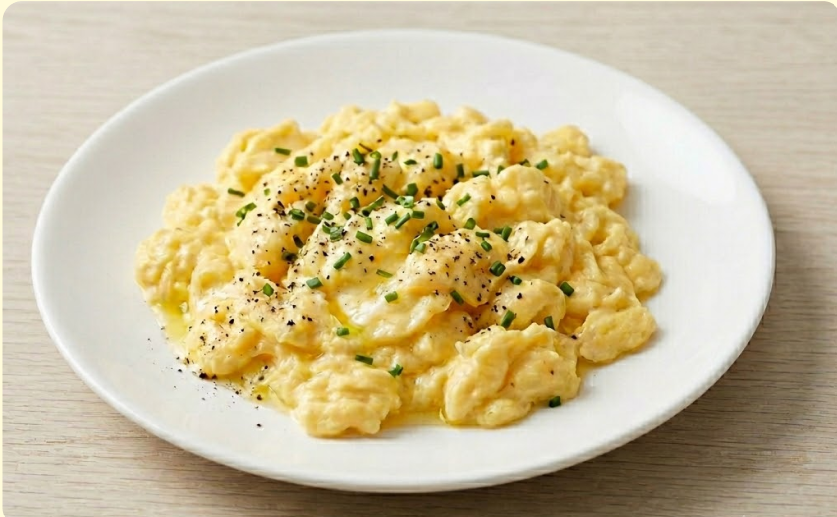
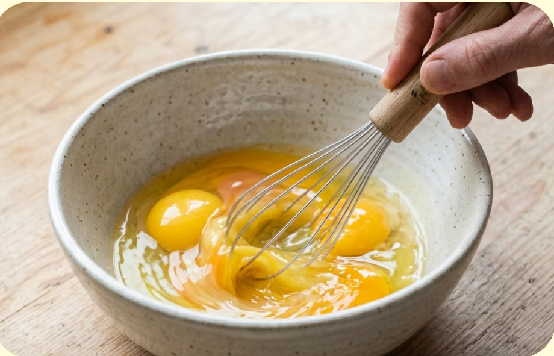
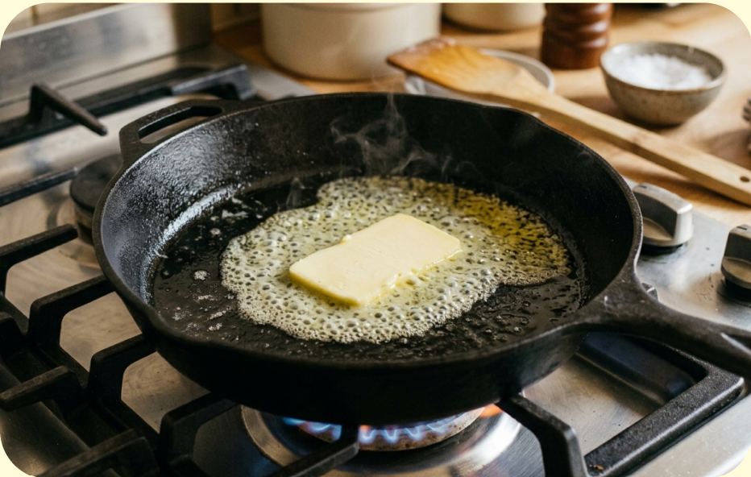
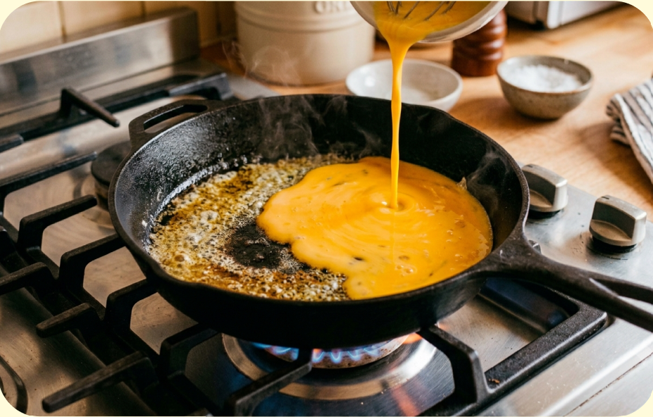
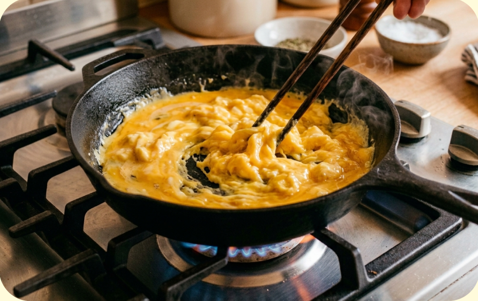
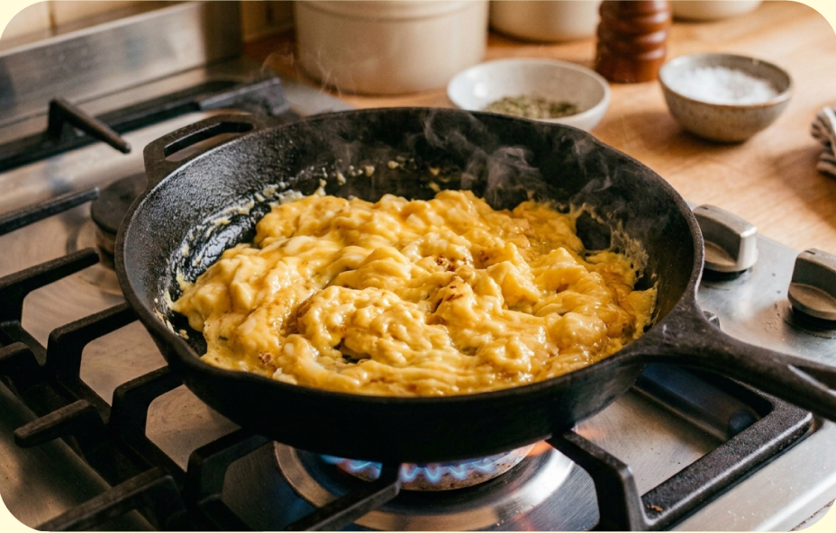
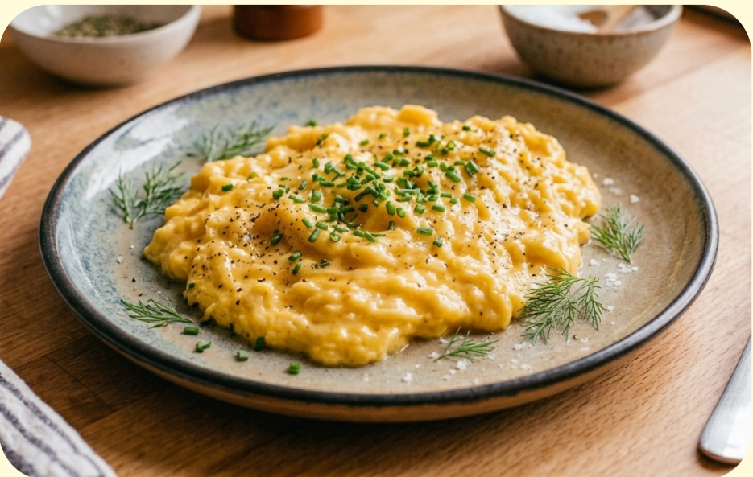

難易度2 ★★☆
材料（一人分）
- ・卵2個
- ・牛乳（なくてもOK）大さじ1
- ・バター5g
必要な道具
- ・ボウル
- ・菜箸または泡立て器
- ・フライパン
注目ポイント
- 🔥 火加減に注意
- 🚫 包丁を使わない
作り方
① ボウルに卵を割り入れます。牛乳があればここで入れます。 塩を入れても良いでしょう。白身が見えなくなるまでよく混ぜます。

② フライパンを弱めの中火にかけ、バターを入れます。 バターが溶けて全体に広がったらOKです。

③ 溶いた卵をフライパンに流し入れます。 卵の周りが固まり始めるまで数秒待ちます。

④ 菜箸やフライ返しで、外側から大きく混ぜます。 固まってきた部分を中央に寄せながら、ゆっくり混ぜます。

⑤ 卵がまだトロッとしている状態で火を止めます。 予熱でちょうど良く固まります。

⑥ お皿に移し、お好みで塩こしょうを振ったら完成です。
